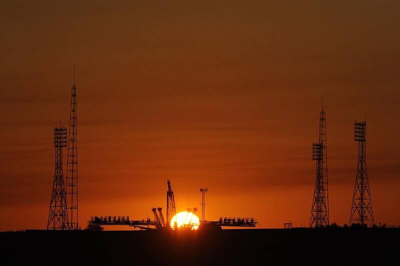

Baikonur Cosmodrome
Kazakhstan

The launch site of Sputnik and Yuri Gagarin, leased by Russia from Kazakhstan. 1
Open in the interactive Watcher
Sources
- Baikonur Cosmodrome Wikipedia
Kazakhstan

The launch site of Sputnik and Yuri Gagarin, leased by Russia from Kazakhstan. 1
Open in the interactive Watcher